Nuestros Cursos Técnicos Productivos
Programación de Sistemas de Información
Este curso te brinda conocimientos sólidos en lógica de programación, desarrollo de aplicaciones web y administración de bases de datos. Trabajamos con proyectos reales que te preparan para insertarte rápidamente en el sector tecnológico, incluyendo tecnologías modernas como JavaScript, Python y SQL.

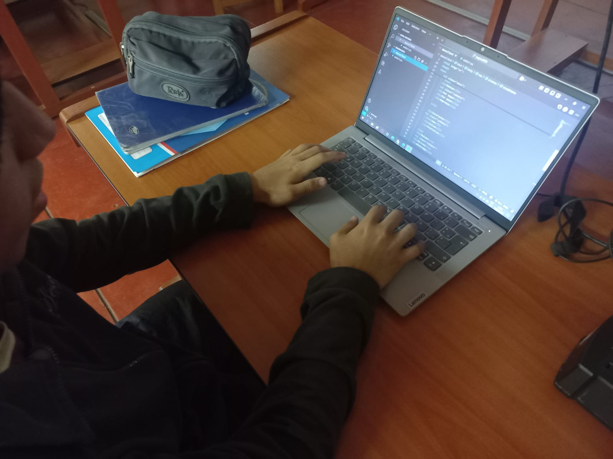
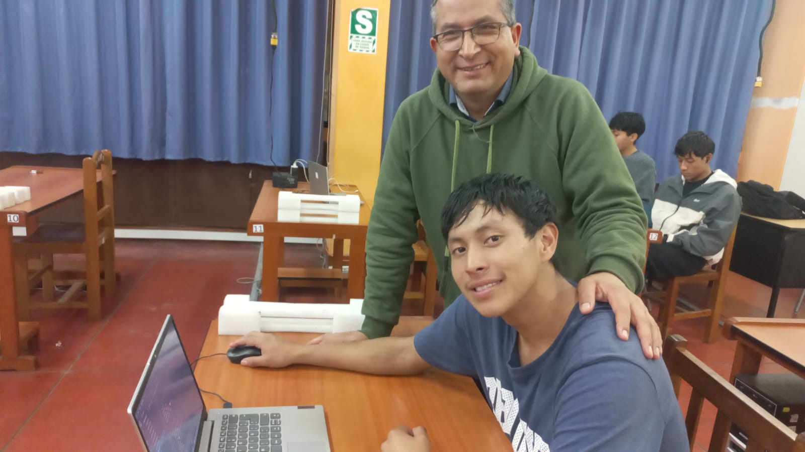
Carpintería Metálica
Aprende técnicas profesionales de corte, soldadura y ensamblaje de estructuras metálicas. Este curso es ideal para quienes desean emprender en la construcción, manufactura o mantenimiento industrial, con prácticas en talleres equipados con maquinaria moderna.
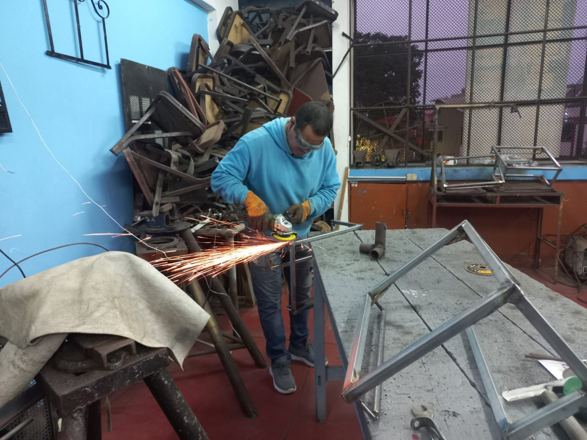
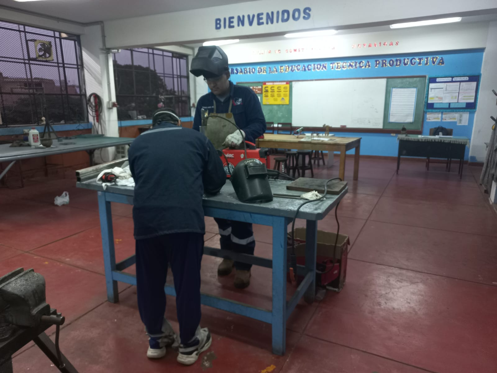
Estilismo
Capacítate en cosmetología, corte de cabello, técnicas de coloración, tratamientos capilares y asesoría de imagen. Este programa es perfecto para quienes quieren desarrollarse profesionalmente en el sector de la belleza o iniciar su propio salón.
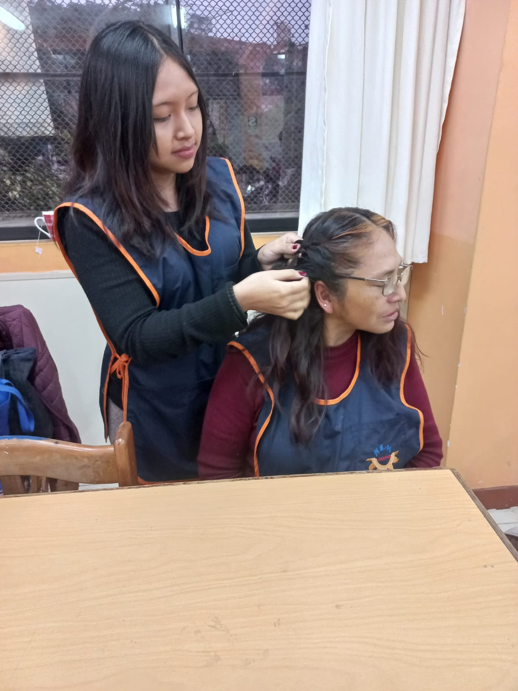
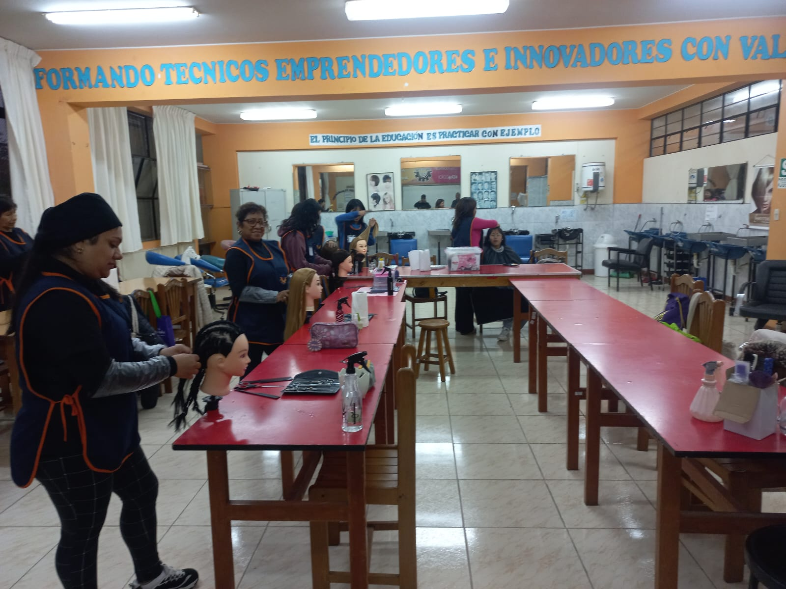
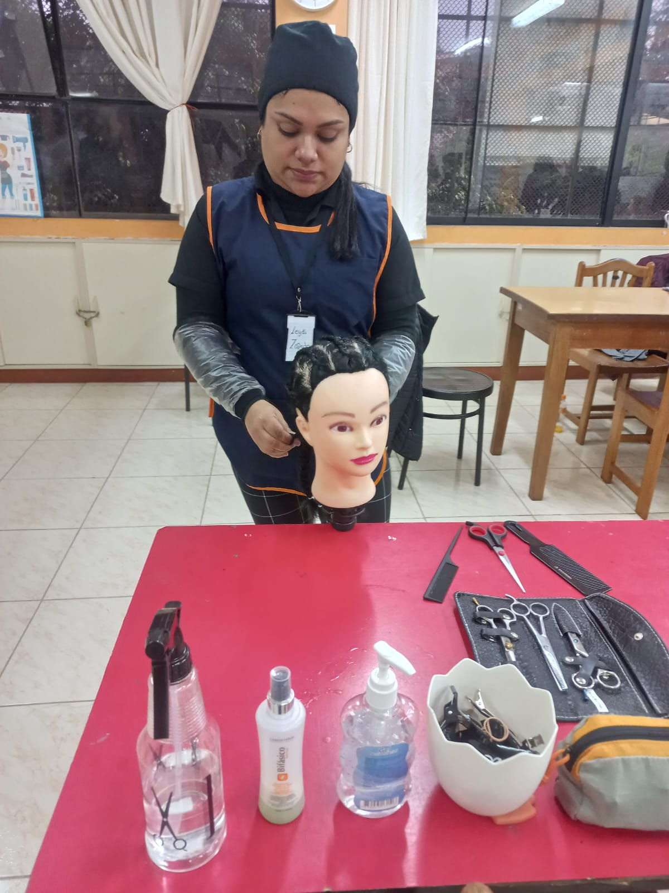
Costura y Acabados
Desde técnicas básicas hasta avanzadas en confección textil, aprenderás toma de medidas, elaboración de moldes, uso de máquinas de coser y acabados profesionales que te preparan para la industria textil y moda.
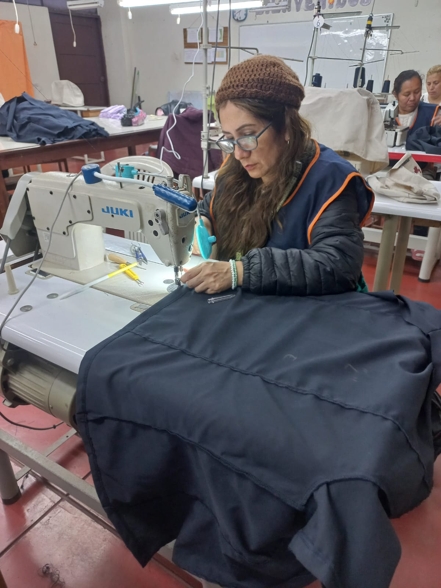
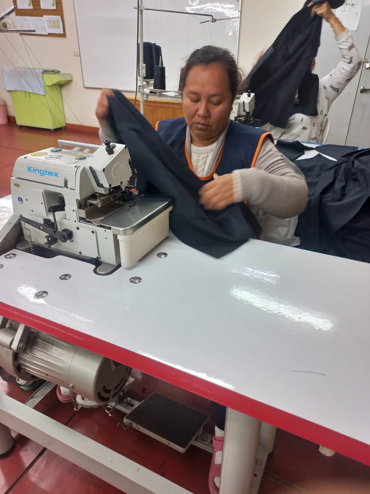
Panadería y Pastelería
Desarrolla habilidades para elaborar productos de panadería y repostería: panes artesanales, tortas, pasteles y masas especiales. Enfocado en técnicas de higiene, manipulación y creatividad culinaria.
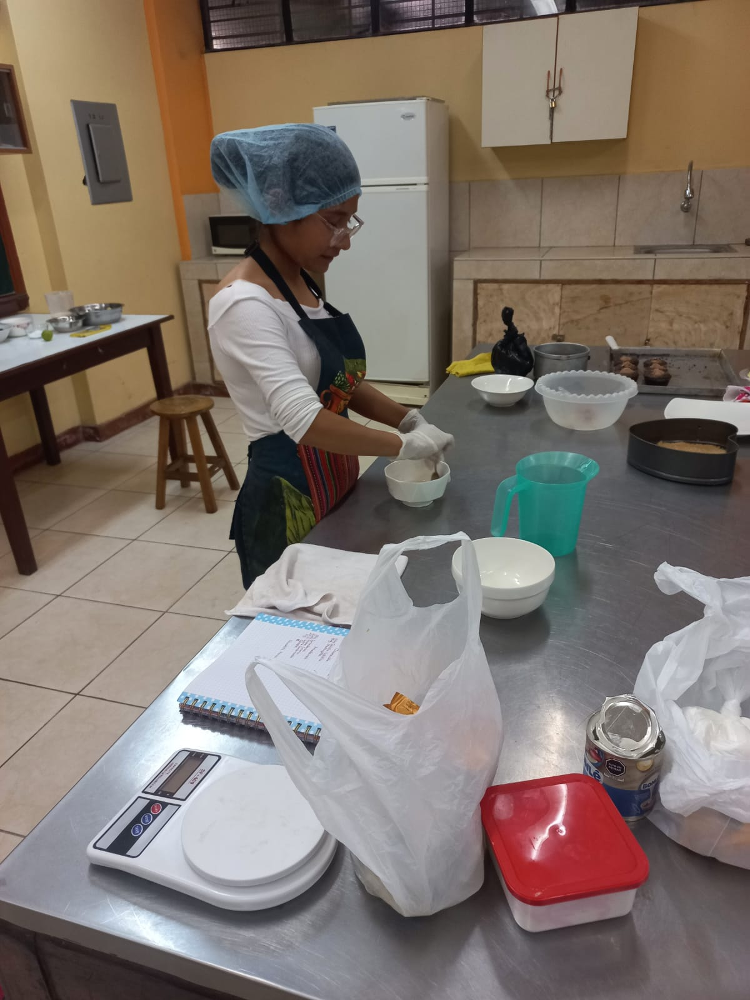
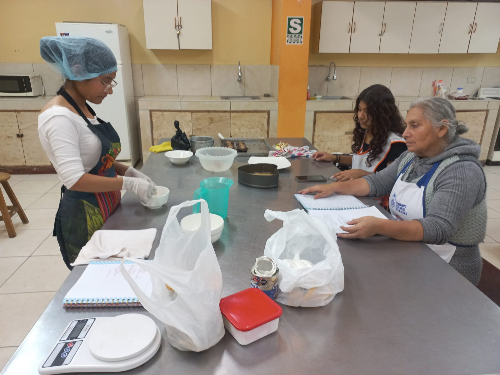
Servicios Básicos de Gastronomía
Capacítate en técnicas de preparación, presentación y servicio de alimentos y bebidas. Aprende cocina básica, manipulación higiénica y atención al cliente para trabajar en restaurantes, hoteles y catering.
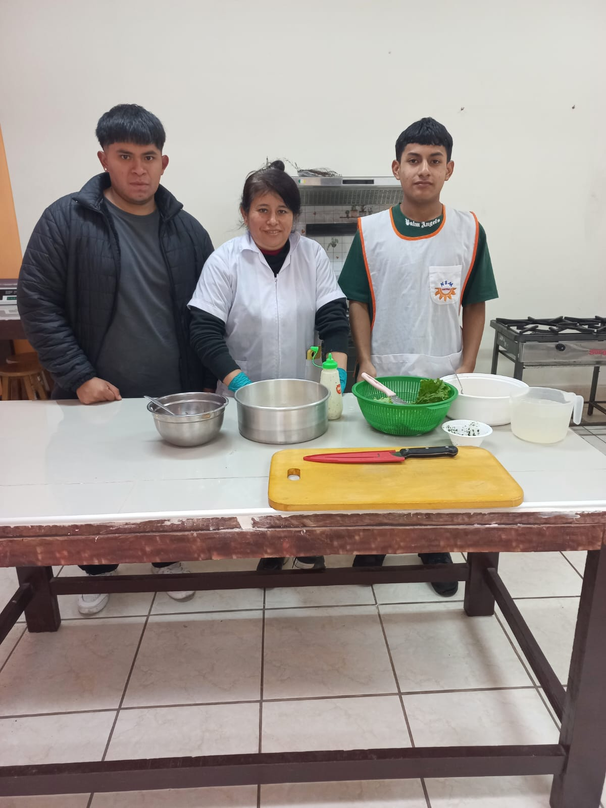
Patronaje
Aprende a diseñar, trazar y adaptar patrones para la confección de prendas. Fundamental para quienes desean especializarse en la industria textil y moda, con énfasis en precisión y creatividad técnica.
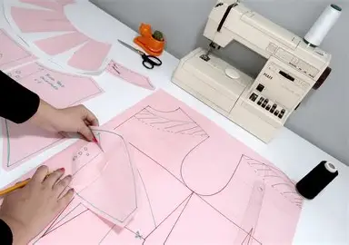
Fabricación de Prendas de Vestir
Este curso te prepara para fabricar prendas de vestir con estándares profesionales, desde la selección de telas hasta la confección y acabado final, incorporando técnicas actuales de la industria de la moda.
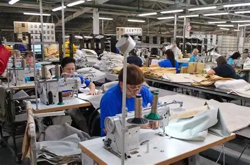
Plataformas de Servicios TI
Conoce y administra plataformas tecnológicas fundamentales para la gestión de servicios de TI. Este curso incluye aprendizaje en infraestructura, soporte técnico y administración de redes y servicios en la nube.
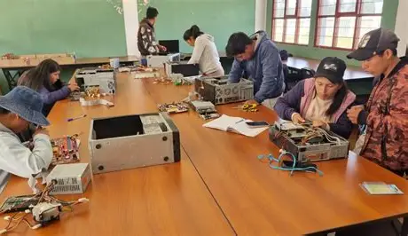
Confección de Artículos de Cuero y Marroquinería
Aprende a diseñar y fabricar productos de cuero como carteras, cinturones y otros accesorios. El curso combina técnicas artesanales y uso de maquinaria especializada para desarrollar productos de alta calidad.
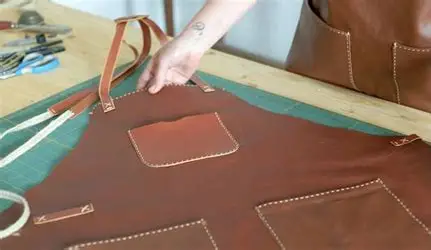
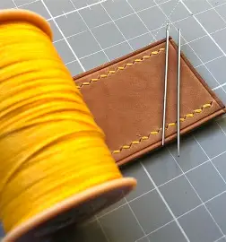